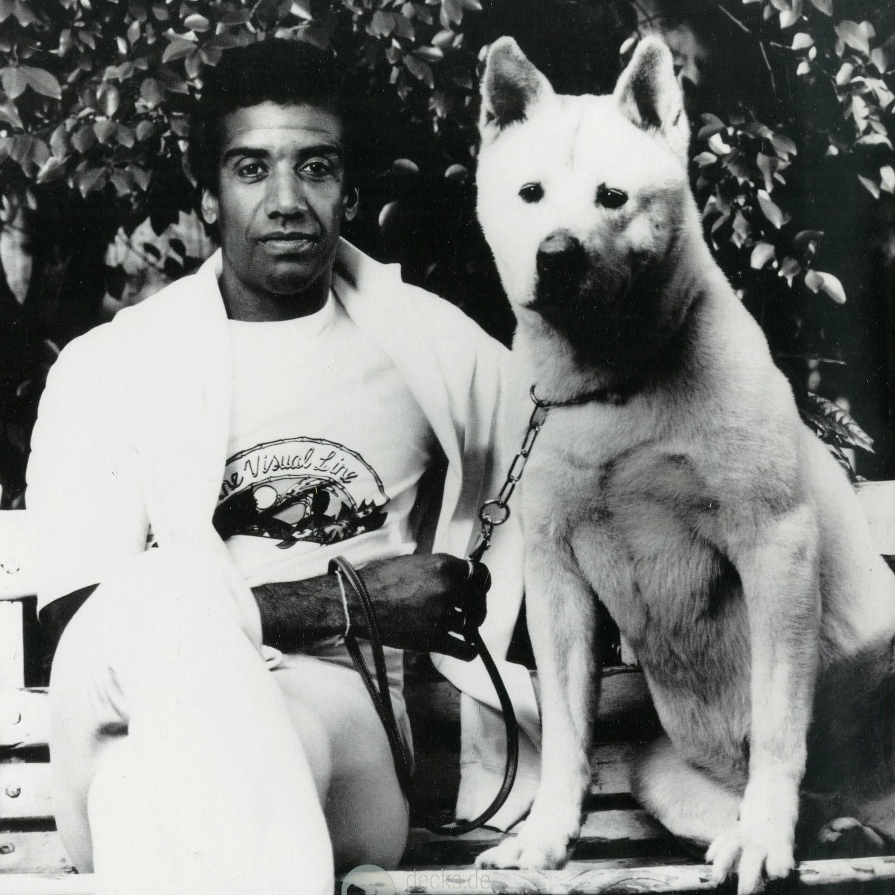

Felipe só ouve música top
É verdade, sem mentira, certo e muito verdadeiro...

Seria difícil, para mim, escolher um cantor ou grupo favorito, cada momento pede uma música diferente e,
em se tratando de música, só existem dois tipos: a boa e a ruim. Considerando que eu devo apresentar
um nome para o trabalho em questão, acredito que Jorge Ben é o cara!
Eu não tenho um ouvido bom para música, não consigo identificar muitas categorias musicais para além do "estou gostando" e do "não estou gostando", mas eu amo poesia, palavras bem articuladas, imagens inusitadas, viajar nas ideias. Na maioria das músicas do Jorge Ben eu tenho tudo isso...
O álbum pelo qual eu tive meu primeiro contato com a música do Jorge Ben, de forma consciente, ou seja, eu
dizendo vou escutar Jorge Ben Jor
, foi
A Tábua de Esmeralda
e foi amor na primeira faixa, que, diga-se de passagem, é a música
Os alquimistas estão
chegando, sem sombra de dúvidas uma das minhas preferidas não só do cantor, mas de todas
as músicas que eu gosto.